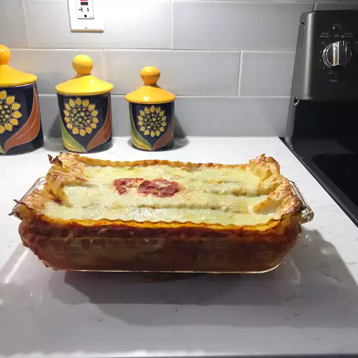

Spinach Lasagna

Description
It's easy, it's cheesy, and it's vegetarian!
Ingredients
- cooking spray
- 9 lasagna noodles
- 1 bunch fresh spinach
- 1 (8 ounce) container ricotta cheese
- 1/2 cup shredded mozzarella cheese
- 1 egg, lightly beaten
- 1 pinch ground nutmeg
- 1 pinch dried basil
- salt and ground black pepper to taste
- 1 cup pasta sauce
- 1/2 cup shredded mozzarella cheese
- 1/4 cup grated Parmesan cheese
Preparation Steps
- Preheat oven to 400 degrees F (200 degrees C). Spray a 1 1/2-quart casserole dish with cooking spray.
- Bring a large pot of lightly salted water to a boil. Cook lasagna in the boiling water, stirring occasionally, until cooked through but firm to the bite, about 8 minutes. Drain.
- Place a steamer insert into a saucepan and fill with water to just below the bottom of the steamer. Bring water to a boil. Add spinach, cover, and steam until tender, 2 to 6 minutes. Drain spinach.
- Mix spinach, ricotta cheese, 1/2 cup mozzarella cheese, egg, nutmeg, basil, salt, and black pepper in a bowl until thoroughly combined.
- Spread 1/4 cup pasta sauce on the bottom of the prepared casserole dish; top with 3 lasagna noodles, 1/2 of the ricotta mixture, and 1/4 cup pasta sauce. Repeat layers of 3 more noodles, 1/2 cup ricotta mixture, and 1/4 cup pasta sauce. End with remaining 3 lasagna noodles and 1/4 cup pasta sauce. Sprinkle 1/2 cup mozzarella cheese and Parmesan cheese on top. Cover casserole with aluminum foil.
- Bake in the preheated oven for 25 minutes. Uncover casserole and continue baking until lasagna is bubbling and lightly browned, about 25 more minutes. Let lasagna stand 5 minutes before serving.